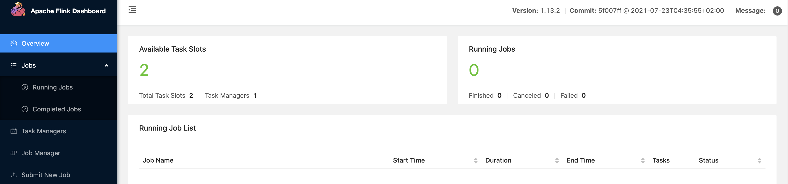

基于 Flink CDC 3.0 构建 MySQL 到 Doris 的 Streaming ELT¶
这篇教程将展示如何基于 Flink CDC 快速构建 MySQL 到 Doris 的 Streaming ELT 作业，包含整库同步、表结构变更同步和分库分表同步的功能。
本教程的演示都将在 Flink CDC CLI 中进行，无需一行 Java/Scala 代码，也无需安装 IDE。
准备阶段¶
准备一台已经安装了 Docker 的 Linux 或者 MacOS 电脑。
准备 Flink Standalone 集群¶
下载 Flink 1.18.0 ，解压后得到 flink-1.18.0 目录。
使用下面的命令跳转至 Flink 目录下，并且设置 FLINK_HOME 为 flink-1.18.0 所在目录。cd flink-1.18.0通过在 conf/flink-conf.yaml 配置文件追加下列参数开启 checkpoint，每隔 3 秒做一次 checkpoint。
execution.checkpointing.interval: 3000
使用下面的命令启动 Flink 集群。
./bin/start-cluster.sh
启动成功的话，可以在 http://localhost:8081/ 访问到 Flink Web UI，如下所示：

多次执行 start-cluster.sh 可以拉起多个 TaskManager。
准备 Docker 环境¶
接下来的教程将以 docker-compose 的方式准备所需要的组件。
宿主机配置
由于 Doris 的运行需要内存映射支持，需在宿主机执行如下命令sysctl -w vm.max_map_count=2000000
MacOS 由于内部实现容器的方式不同，在部署时宿主机直接修改max_map_count值可能无法成功，需要先创建以下容器：
docker run -it --privileged --pid=host --name=change_count debian nsenter -t 1 -m -u -n -i sh
容器创建成功执行以下命令：
sysctl -w vm.max_map_count=2000000
然后 exit 退出，创建 Doris Docker 集群。
docker 镜像启动
使用下面的内容创建一个docker-compose.yml文件：version: '2.1' services: doris: image: yagagagaga/doris-standalone ports: - "8030:8030" - "8040:8040" - "9030:9030" mysql: image: debezium/example-mysql:1.1 ports: - "3306:3306" environment: - MYSQL_ROOT_PASSWORD=123456 - MYSQL_USER=mysqluser - MYSQL_PASSWORD=mysqlpw
该 Docker Compose 中包含的容器有：
MySQL: 包含商品信息的数据库
app_db和 用户信息的数据库my_dbDoris: 存储从 MySQL 中根据规则映射过来的结果表
在 docker-compose.yml 所在目录下执行下面的命令来启动本教程需要的组件：
docker-compose up -d
该命令将以 detached 模式自动启动 Docker Compose 配置中定义的所有容器。你可以通过 docker ps 来观察上述的容器是否正常启动了，也可以通过访问 http://localhost:8030/ 来查看 Doris 是否运行正常。
在 MySQL 数据库中准备数据¶
进入 MySQL 容器
docker-compose exec mysql mysql -uroot -p123456创建数据库
app_db和表orders,products,shipments，并插入数据-- 创建数据库 CREATE DATABASE app_db; USE app_db; -- 创建 orders 表 CREATE TABLE `orders` ( `id` INT NOT NULL, `price` DECIMAL(10,2) NOT NULL, PRIMARY KEY (`id`) ); -- 插入数据 INSERT INTO `orders` (`id`, `price`) VALUES (1, 4.00); INSERT INTO `orders` (`id`, `price`) VALUES (2, 100.00); -- 创建 shipments 表 CREATE TABLE `shipments` ( `id` INT NOT NULL, `city` VARCHAR(255) NOT NULL, PRIMARY KEY (`id`) ); -- 插入数据 INSERT INTO `shipments` (`id`, `city`) VALUES (1, 'beijing'); INSERT INTO `shipments` (`id`, `city`) VALUES (2, 'xian'); -- 创建 products 表 CREATE TABLE `products` ( `id` INT NOT NULL, `product` VARCHAR(255) NOT NULL, PRIMARY KEY (`id`) ); -- 插入数据 INSERT INTO `products` (`id`, `product`) VALUES (1, 'Beer'); INSERT INTO `products` (`id`, `product`) VALUES (2, 'Cap'); INSERT INTO `products` (`id`, `product`) VALUES (3, 'Peanut');
在 Doris 数据库中创建数据库¶
Doris 暂时不支持自动创建数据库，需要先创建写入表对应的数据库。
进入 Doris Web UI。
http://localhost:8030/
默认的用户名为 root，默认密码为空。
通过 Web UI 创建
app_db数据库create database app_db;

通过 FlinkCDC cli 提交任务¶
下载下面列出的二进制压缩包，并解压得到目录
flink-cdc-3.0.0：
flink-cdc-3.0.0-bin.tar.gz flink-cdc-3.0.0 下会包含 bin、lib、log、conf 四个目录。下载下面列出的 connector 包，并且移动到 lib 目录下
下载链接只对已发布的版本有效, SNAPSHOT 版本需要本地基于 master 或 release- 分支编译编写任务配置 yaml 文件
下面给出了一个整库同步的示例文件 mysql-to-doris.yaml：################################################################################ # Description: Sync MySQL all tables to Doris ################################################################################ source: type: mysql hostname: localhost port: 3306 username: root password: 123456 tables: app_db.\.* server-id: 5400-5404 server-time-zone: UTC sink: type: doris fenodes: 127.0.0.1:8030 username: root password: "" table.create.properties.light_schema_change: true table.create.properties.replication_num: 1 pipeline: name: Sync MySQL Database to Doris parallelism: 2
其中：
source 中的 tables: app_db.\.* 通过正则匹配同步 app_db 下的所有表。
sink 添加 table.create.properties.replication_num 参数是由于 Docker 镜像中只有一个 Doris BE 节点。
最后，通过命令行提交任务到 Flink Standalone cluster
bash bin/flink-cdc.sh mysql-to-doris.yaml
提交成功后，返回信息如：
Pipeline has been submitted to cluster.
Job ID: ae30f4580f1918bebf16752d4963dc54
Job Description: Sync MySQL Database to Doris
在 Flink Web UI，可以看到一个名为 Sync MySQL Database to Doris 的任务正在运行。

打开 Doris 的 Web UI，可以看到数据表已经被创建出来，数据能成功写入。
同步变更¶
进入 MySQL 容器
```shell
docker-compose exec mysql mysql -uroot -p123456
```
接下来，修改 MySQL 数据库中表的数据，Doris 中显示的订单数据也将实时更新：
在 MySQL 的
orders表中插入一条数据INSERT INTO app_db.orders (id, price) VALUES (3, 100.00);
在 MySQL 的
orders表中增加一个字段ALTER TABLE app_db.orders ADD amount varchar(100) NULL;
在 MySQL 的
orders表中更新一条数据UPDATE app_db.orders SET price=100.00, amount=100.00 WHERE id=1;
在 MySQL 的
orders表中删除一条数据DELETE FROM app_db.orders WHERE id=2;
每执行一步就刷新一次 Doris Web UI，可以看到 Doris 中显示的 orders 数据将实时更新，如下所示：
同样的，去修改 shipments, products 表，也能在 Doris 中实时看到同步变更的结果。
路由变更¶
Flink CDC 提供了将源表的表结构/数据路由到其他表名的配置，借助这种能力，我们能够实现表名库名替换，整库同步等功能。
下面提供一个配置文件说明：
################################################################################
# Description: Sync MySQL all tables to Doris
################################################################################
source:
type: mysql
hostname: localhost
port: 3306
username: root
password: 123456
tables: app_db.\.*
server-id: 5400-5404
server-time-zone: UTC
sink:
type: doris
fenodes: 127.0.0.1:8030
benodes: 127.0.0.1:8040
username: root
password: ""
table.create.properties.light_schema_change: true
table.create.properties.replication_num: 1
route:
- source-table: app_db.orders
sink-table: ods_db.ods_orders
- source-table: app_db.shipments
sink-table: ods_db.ods_shipments
- source-table: app_db.products
sink-table: ods_db.ods_products
pipeline:
name: Sync MySQL Database to Doris
parallelism: 2
通过上面的 route 配置，会将 app_db.orders 表的结构和数据同步到 ods_db.ods_orders中。从而实现数据库迁移的功能。
特别地，source-table 支持正则表达式匹配多表，从而实现分库分表同步的功能，例如下面的配置：
route:
- source-table: app_db.order.*
sink-table: ods_db.ods_orders
这样，就可以将诸如 app_db.order01、app_db.order02、app_db.order03 的表汇总到 ods_db.ods_orders 中。注意，目前还不支持多表中存在相同主键数据的场景，将在后续版本支持。
环境清理¶
本教程结束后，在 docker-compose.yml 文件所在的目录下执行如下命令停止所有容器：
docker-compose down
在 Flink 所在目录 flink-1.18.0 下执行如下命令停止 Flink 集群：
./bin/stop-cluster.sh